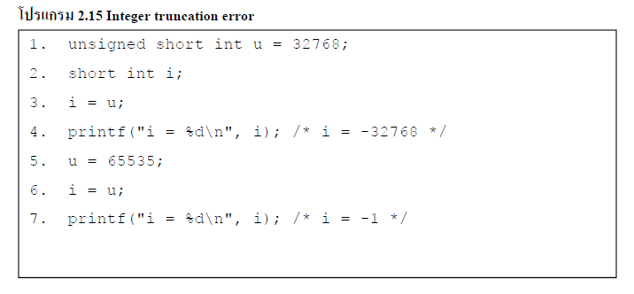

| เกิดขึ้นเมื่อ integer ถูกแปลงเป็น integer ที่มีขนาดเล็กและค่าดั้งเดิมของ integer จะอยู่นอกช่วงของชนิดข้อมูล integer ที่มีขนาดเล็กนั้นและ ปกติ low-order bit ค่าเดิมจะถูกเก็บรักษาไว้และhigh-order bit ก็จะหายไป เมื่อค่า unsinged ถูกแปลงไปเป็นค่า signed ที่มีความยาวเท่ากัน ตัว bit pattern จะถูกเก็บรักษาไว้ซึ่งเป็นสาเหตุที่ high-order bit จะถูกแปลงไปเป็น sign bit จากผลดังกล่าวทำให้ ค่าสูงสุดของ signed integer จะถูกแปลงไปเป็นค่าลบ ดังแสดงในโปรแรม 2.15 แสดง Truncation Errors และไม่เกิด signed error เพราะข้อมูลมีชนิด signed ซึ่งมีหนึ่งบิตน้อยกว่าที่จะแทนในผลลัพธ์ได้ | ||
|

|
||
| video | ||